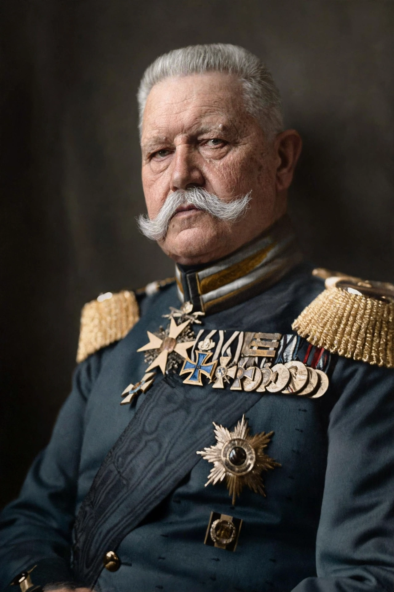

From Wikipedia, the free encyclopedia
| Paul von Hindenburg | |
|---|---|
 Hindenburg as President of Germany | |
| Born | 2 October 1847, Posen, Prussia |
| Died | 2 August 1934 (aged 86), Neudeck, East Prussia |
| Office | President of Germany, 1925–1934 |
| Military rank | Generalfeldmarschall |
| Known for | Victory at Tannenberg (1914); appointing Hitler Chancellor (1933) |
Paul Ludwig Hans Anton von Beneckendorff und von Hindenburg (2 October 1847 – 2 August 1934) was a German field marshal and statesman who led the Imperial German Army during the First World War and later served as President of Germany from 1925 until his death in 1934. His presidency ended the Weimar Republic in practice: he governed increasingly by emergency decree, appointed Adolf Hitler as Chancellor in January 1933, and signed the Reichstag Fire Decree that suspended civil liberties.
Born into a Prussian Junker family in Posen, Hindenburg fought in the Austro-Prussian War (1866) and the Franco-Prussian War (1870–71), attended the proclamation of the German Empire at Versailles, and retired in 1911 as a general. Recalled in August 1914, he and his chief of staff Erich Ludendorff won the crushing victory over Russia at Tannenberg, making Hindenburg a national hero — his image carved into the giant wooden "Iron Hindenburg" statue in Berlin. From 1916, as Chief of the General Staff with Ludendorff as Quartermaster General, he effectively directed Germany's war effort until the collapse of 1918, after which he promoted the "stab-in-the-back" legend blaming defeat on civilians and socialists.
In 1925, after Friedrich Ebert's death, the right-wing bloc persuaded the reluctant 77-year-old monarchist to stand for the presidency; he defeated the republican candidate Wilhelm Marx with support including the Centre Party's opponents. Though initially loyal to the constitution, from 1930 he authorised Chancellor Heinrich Brüning to rule by Article 48 emergency decrees, bypassing the Reichstag. Re-elected in 1932 — ironically with SPD support as the lesser evil against Hitler — he then dismissed Brüning and cycled through the cabinets of Franz von Papen and Kurt von Schleicher.
On 30 January 1933, persuaded by Papen and his camarilla that Hitler could be "tamed" in a conservative-dominated cabinet, Hindenburg appointed Hitler Chancellor. After the Reichstag fire he signed the decree that abolished civil liberty, and in March he presided over the "Day of Potsdam" pageant linking Prussian tradition to the new regime. His death on 2 August 1934 removed the last restraint: Hitler merged the presidency into the office of Führer and had the army swear an oath to him personally. Hindenburg was buried, against his wishes, in the monumental Tannenberg Memorial.